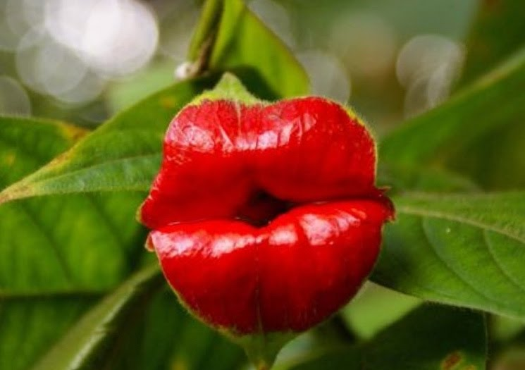

Евкаліпт райдужний - це 60-метрові дерева всіх кольорів веселки. Він зустрічається в лісах на Філіппінах. Ці дерева ростуть настільки швидко, що кора злазить з них смугами, оголюючи яскраво-зелений шар, який у міру старіння змінює колір на жовтий, помаранчевий, червоний, фіолетовий і коричневий.
Дивовижні рослини Землі
Незвичайні рослини
Евкаліпт райдужний

Літопс (Живе каміння)
Як із цих двох маленьких камінців виростає прекрасна сонячна квітка?! Виявляється, це зовсім не каміння, а товсті листки літопса. Так вражаюча рослина пристосувалась до спекотного клімату кам’янистих пустель Південної Африки, звідки вона родом. А ще батьківщиною квітки вважають Намібію, ПАР та Ботсвану. Рослина любить сонце, тепло та вологу. Виростає літопс до 5 см у висоту і ширину.

Псіхотрія піднесена («гарячі губки»)
Ця дивовижна за красою квітка заслужено носить статус найромантичнішої квітки на планеті. За яскраво-червоний кольор люди ще називають її «гарячі губки». Як не дивно, самі «губки» - це не квітка рослини. Квітка висовується з «рота», вона покрита жовтим в'язким слизом. Квітка виробляє галюциногенну речовину.мс Увссіхотрія любить тепло і вологу і росте в тропіках. Його батьківщиною є ліси Південної і Центральної Америки, де панує субтропічний клімат.
